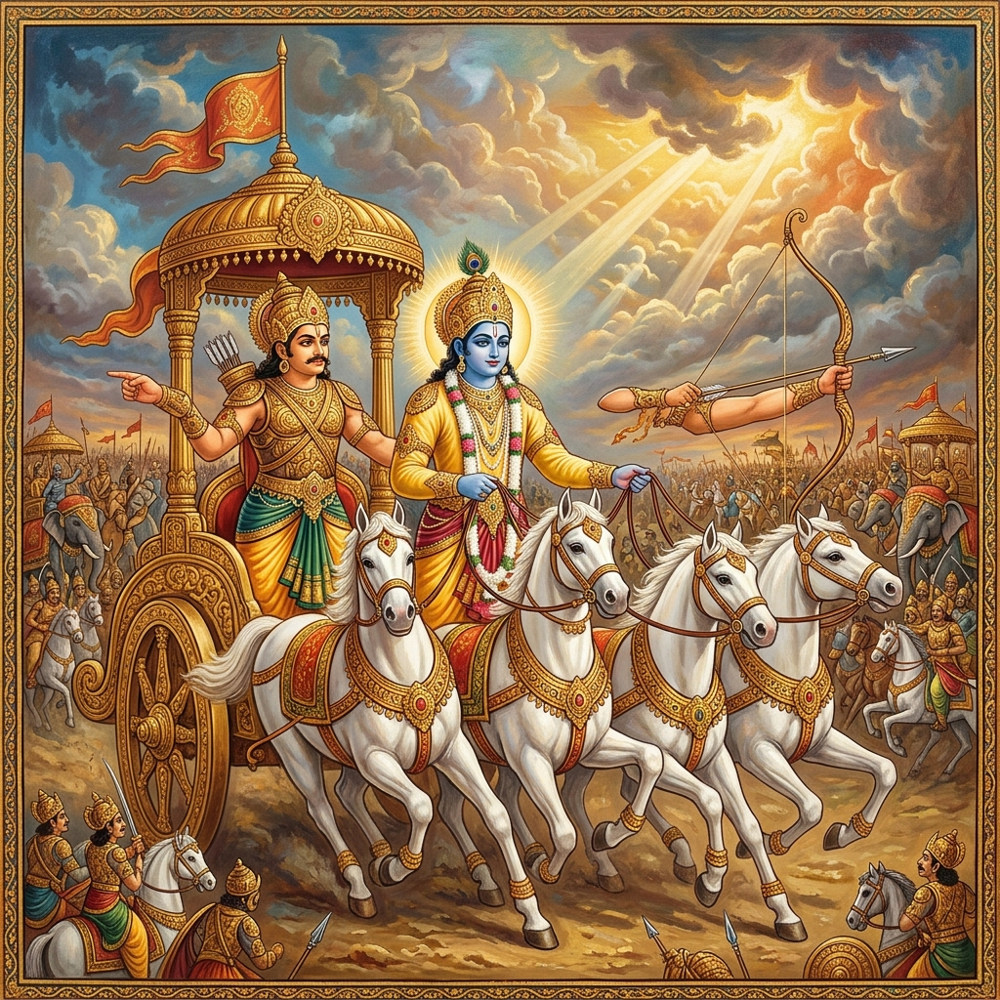
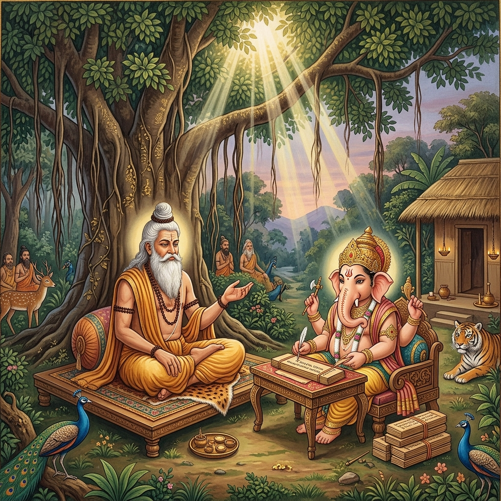
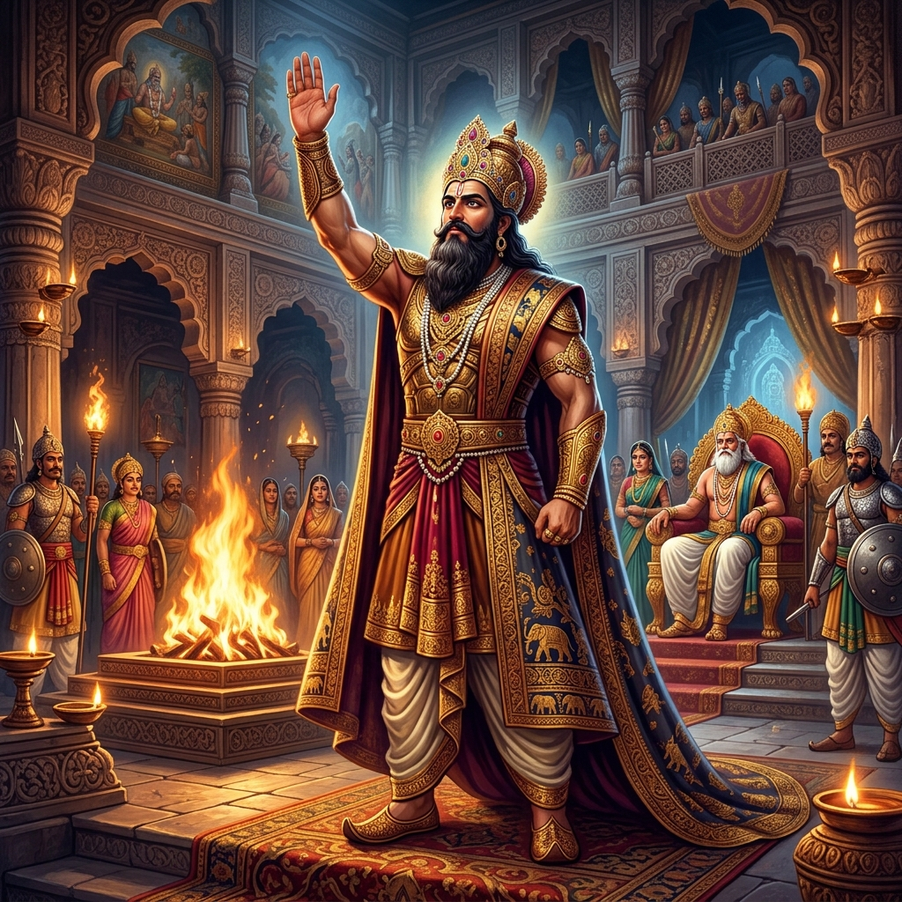
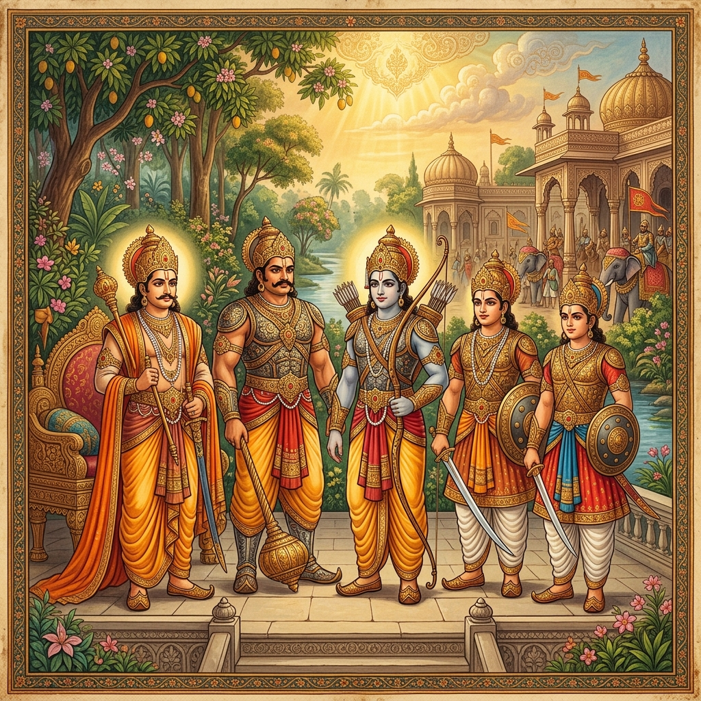
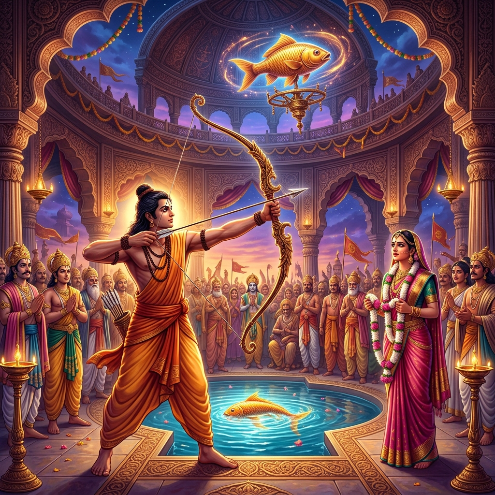
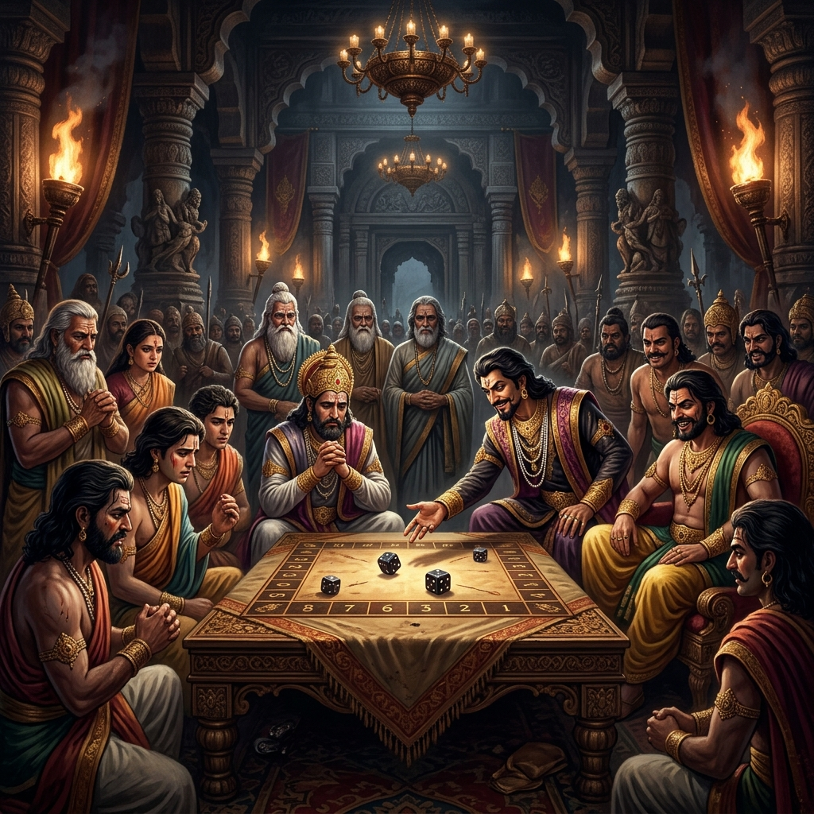
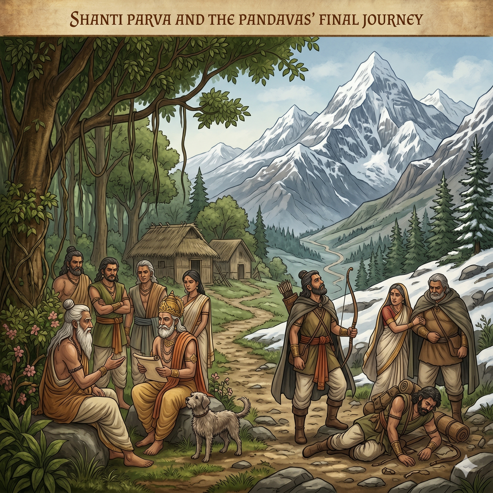

Origin — Vyasa and the Composition

The Mahabharata was composed by the sage Krishna Dvaipayana Vyasa, who is also one of its principal characters. According to tradition, Vyasa dictated the entire epic to Lord Ganesha, who agreed to write it on the condition that Vyasa narrate without pause — Vyasa accepted on condition that Ganesha understand each verse before writing it, giving the sage time to compose the next. This creative partnership produced the world's longest epic: approximately 100,000 shlokas (verses) organized into 18 Parvas (books) plus the Harivamsa supplement — totalling over 1.8 million words.
The Mahabharata traces the history of the Kuru dynasty from its legendary founder Kuru, through the great King Shantanu of Hastinapur, down to the Pandavas and Kauravas. The epic declares itself to be not merely a story but a dharmashastra — a treatise on righteousness — and famously states: "Whatever is here is found elsewhere; what is not here is found nowhere." It encompasses within its vast frame cosmology, theology, philosophy, statecraft, economics, genealogy, ethics, and the totality of dharmic wisdom available to ancient India.
Bhishma — The Great Vow and the Kuru Dynasty

King Shantanu of Hastinapur fell in love with Satyavati, a fisherman's daughter, whose father refused her hand unless her sons — not Shantanu's existing son Devavrata — would inherit the throne. The young crown prince Devavrata, to fulfill his father's desire, took a terrible double vow: never to claim the throne and never to marry or father children. This vow was so fearsome that the gods named him Bhishma — "he of the terrible vow" — and granted him the power to choose the moment of his own death.
Bhishma is the towering moral figure of the Mahabharata — a man of supreme wisdom, courage, and nobility, bound by his oath of loyalty to the throne of Hastinapur even when the throne passes to unworthy hands. He is the grandsire of both the Pandavas and Kauravas, loves both equally, but is compelled by his vow to fight on the Kaurava side in the Kurukshetra War — one of the epic's most profound moral paradoxes. He is mortally wounded in battle and lies on a bed of arrows for 58 days, during which time he delivers the Shanti Parva — a comprehensive discourse on governance, ethics, and liberation.
The Pandavas and Kauravas — Rivalry and Education

King Dhritarashtra (blind from birth) fathered a hundred sons — the Kauravas — led by Duryodhana. His brother Pandu was cursed and could not father children naturally; his wives Kunti and Madri invoked divine fathers through a mantra, producing five sons: Yudhishthira (son of Dharma), Bhima (son of Vayu), Arjuna (son of Indra), and twins Nakula and Sahadeva. All five — the Pandavas — were educated alongside the Kauravas under the great teacher Dronacharya. The rivalry between them grew from childhood, fuelled by Duryodhana's deepening envy of the Pandavas' superior abilities.
Arjuna emerged as the most gifted student — Drona famously tested his students by placing a wooden bird in a tree and asking what each saw. All described the tree, the branch, the bird — but Arjuna saw only the bird's eye. Drona made him the supreme archer of his age. Karna, who appeared at the tournament as a rival to Arjuna, was humiliated when his low birth was revealed — Duryodhana immediately crowned him king of Anga, winning his lifelong loyalty. This complex web of talent, jealousy, loyalty, and injustice set the stage for the epic's tragedy.
Draupadi's Swayamvara and Indraprastha

The Pandavas, having escaped an assassination attempt by Duryodhana (the burning of the lac palace — Jatugriha), traveled in disguise to the swayamvara of Draupadi, princess of Panchala. Arjuna, disguised as a brahmin, won Draupadi's hand by shooting a rotating fish target while looking only at its reflection in water below — a feat none of the assembled kings could accomplish. When the Pandavas revealed their identity, the marriage took the remarkable form of all five brothers sharing Draupadi as their common wife — an arrangement sanctioned by sage Vyasa on divine authority.
King Dhritarashtra, pressured by circumstance and counsel, divided the Kuru kingdom: the Kauravas retained Hastinapur, and the Pandavas received the barren land of Khandavaprastha. With Krishna's help and the divine architect Maya, the Pandavas transformed this wasteland into the magnificent city of Indraprastha — said to rival heaven in its beauty. Yudhishthira performed the Rajasuya Yajna (imperial sacrifice), asserting his supremacy among all kings — which deepened Duryodhana's burning envy as he watched the splendour of the Pandavas' court.
Sabha Parva — The Fateful Dice Game

The Sabha Parva narrates the Mahabharata's most catastrophic event — the dice game arranged by Duryodhana, using his maternal uncle Shakuni as a proxy player. Shakuni was a master of loaded dice; Yudhishthira, bound by dharma to accept a royal challenge, could not refuse. In a devastating descent into compulsive gambling, Yudhishthira staked and lost his kingdom, his treasury, his army, his four brothers, himself, and finally Draupadi. The loss of Draupadi — a free woman being wagered as a slave — was a catastrophic violation of dharma.
Draupadi was dragged by her hair into the royal assembly hall by the Kaurava prince Duhshasana. Duryodhana ordered her disrobed. Draupadi cried out for justice — asking the assembled elders, warriors, and her own husbands to intervene. They remained silent. In her desperate prayer to Krishna, her sari became miraculously infinite — Duhshasana pulled and pulled but could not reach its end. This public humiliation of Draupadi became the Mahabharata's moral wound — the moment that made reconciliation impossible and war inevitable. Draupadi took a terrible vow: she would not tie her hair until she washed it in Duhshasana's blood.
Vana Parva — Twelve Years of Forest Exile

Following the dice game, the Pandavas were exiled to the forest for twelve years, followed by one year of incognito existence (Ajnatavasa). The Vana Parva is the longest section of the Mahabharata and is rich with sub-stories, philosophical dialogues, and pilgrimage accounts. Key events include Draupadi's abduction attempt by King Jayadratha (repulsed by Bhima and Arjuna), Arjuna's journey to heaven to receive divine weapons from Indra, and the Yaksha Prashna — a brilliant philosophical dialogue in which Yudhishthira answers the riddles of a yaksha (divine being), including: "What is the greatest wonder? Every day beings go to Yama's abode, yet those who remain live as if immortal."
In the Virata Parva, the Pandavas spend their thirteenth year incognito at the court of King Virata of Matsya: Yudhishthira as a brahmin scholar named Kanka, Bhima as the cook Vallabha, Arjuna disguised as the eunuch dance teacher Brihanalla, Nakula as a horse keeper, Sahadeva as a cowherd, and Draupadi as the queen's lady-in-waiting Sairandhri. When Virata's general Kichaka attempts to assault Draupadi, Bhima kills him in secret — a dangerous near-exposure. At the end of the year, Arjuna reveals himself in battle to defend Virata's kingdom from a Kaurava cattle-raid, in which he single-handedly defeats the entire Kaurava army.
Udyoga Parva — The Road to War

After their incognito year, the Pandavas demanded the return of their kingdom. Duryodhana refused to give even five villages. Krishna himself undertook a peace mission to Hastinapur as Pandava ambassador — offering Duryodhana a final chance to avoid war by restoring the Pandavas' share of the kingdom. Duryodhana refused, even attempted to arrest Krishna, who revealed his cosmic divine form (Vishwaroopa) before the assembly — a preview of the revelation that would later occur on the Kurukshetra battlefield. War was declared.
Both sides gathered enormous alliances. On the eve of battle, both Arjuna and Duryodhana went to Krishna asking for help. Duryodhana chose Krishna's entire army (the Narayani Sena). Arjuna chose Krishna alone — as his charioteer and advisor — saying that having Krishna was enough. This choice is one of the Mahabharata's most celebrated moments: the Pandavas chose wisdom over force, spirit over matter, dharma over numbers. Eighteen akshauhinis (military divisions) assembled at Kurukshetra for the greatest war in Indian mythology.
The Bhagavad Gita — Song of the Divine
On the first morning of the Kurukshetra War, Arjuna asked Krishna to drive his chariot between the two armies. Seeing his beloved grandsire Bhishma, teacher Drona, cousins, and friends arrayed for battle, Arjuna was overwhelmed with grief and moral paralysis — he threw down his bow and refused to fight. His lament to Krishna forms the opening of the Bhagavad Gita. Krishna's response — spanning 18 chapters and 700 verses — is one of humanity's most profound philosophical and spiritual teachings, covering the immortality of the Atman (soul), the three paths to liberation (Karma Yoga, Bhakti Yoga, Jnana Yoga), the nature of duty, and the supreme reality of Brahman.
The Gita's central teaching — Nishkama Karma, performing one's duty without attachment to its fruits — addresses the universal human experience of being called to act in impossible situations. Krishna reveals his cosmic form (Vishwaroopa) to Arjuna, saying "Now I am become Time, the destroyer of worlds" — words later quoted by Robert Oppenheimer at the first nuclear test. The Bhagavad Gita has been translated into over 75 languages and is studied in philosophy, management, psychology, and theology departments worldwide. Mahatma Gandhi called it his "eternal mother" to which he turned in every crisis.
The 18-Day Kurukshetra War

The 18-day Kurukshetra War is narrated across six Parvas — Bhishma, Drona, Karna, Shalya, Sauptika, and Stri Parvas. Under Bhishma's command, the Kauravas fight with tremendous force for ten days, during which countless heroes fall. Bhishma is finally brought down by Arjuna shooting arrows to which Sikhandin — whom Bhishma will not fight — provides cover. Drona, now commanding, is invincible until the lie about "Ashwatthama" (a elephant is killed) shatters his will; he is killed by Dhrishtadyumna. Karna, revealed as Arjuna's elder half-brother, fights with tragic nobility before Arjuna slays him with the Anjalikastra.
The war's final days become progressively darker: rules of combat are broken, divine weapons used indiscriminately, and great warriors slain through deception. On the 18th day, Duryodhana — the last Kaurava standing — fights Bhima with the mace. Bhima, remembering Draupadi's humiliation and Duryodhana's countless injustices, strikes him below the belt (against the rules) and shatters his thighs. That night, Ashwatthama — Drona's son — attacks and slaughters the Pandava camp while they sleep, killing all five sons of Draupadi. The Pandavas have won the war but lost almost everything. The victors survey a field of millions of dead; Gandhari curses Krishna; the women of Hastinapur weep for their fallen men.
Shanti Parva and the Pandavas' Final Journey

After the war, Yudhishthira — crushed by guilt over the millions killed — goes to the dying Bhishma, who lies on his bed of arrows waiting for the auspicious moment of Uttarayana (winter solstice) to die. For 58 days, Bhishma delivers the Shanti Parva and Anushasana Parva — the two longest sections of the Mahabharata — covering the duties of a king, the nature of dharma, the qualities of a good ruler, economics, law, social organization, philosophy, theology, and the paths to liberation. These two Parvas together constitute one of the most comprehensive treatises on governance and ethics in world literature.
Yudhishthira ruled Hastinapur for 36 years. After Krishna's death and the submergence of Dwaraka in the ocean, the Pandavas — knowing the age of Kali had begun — renounced the kingdom, crowned Parikshit (Arjuna's grandson) as king, and undertook the Mahaprasthana (Great Journey) to Mount Meru. One by one, Draupadi, Sahadeva, Nakula, Arjuna, and Bhima fell on the journey, each for a specific dharmic failing. Only Yudhishthira and a dog completed the ascent — the dog revealed to be Dharma (the god of righteousness) in disguise. Yudhishthira ascended bodily to heaven, where after a brief test in hell to experience the results of his one lie, he was reunited with all his family in the celestial realm — the Svargarohana Parva.